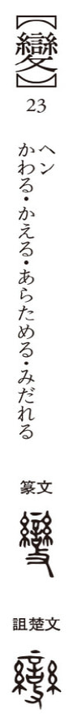

変

assault
Kun: ka(waru), ka(eru) | On: hen
heaven ・ sky
Explanation
The character 変 originates from the fuller form 變, which depicts a ritual vessel used in oath-making. This vessel, marked with words of covenant and adorned with hanging threads as sacred ornaments, symbolized the unbreakable nature of a sworn pledge. In 變, the element 支 is added to show the vessel being struck and broken, signifying the violation or alteration of the oath. From this image of breaking solemn agreements arose the meaning of departing from the usual order, bringing about disruption or transformation. Thus 変 carries the sense of change, alteration, and disorder against the expected state.